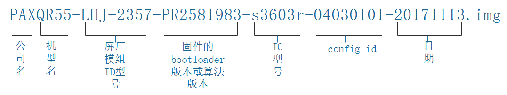

PAX-Android触摸屏固件版本管控说明文档
此说明的目的主要是为了追踪触摸屏固件版本，确保触摸屏固件的唯一性。介于公司项目越来越多，经过与多家代理商打听后，每个代理商都有各自管控的规则，由于这些规则可能存在冲突而导致触摸IC的flash中的数据可能不唯一，这样会使得日后很难追踪固件。为了方便触摸屏固件的管理，便于日后维护与追踪，因此经过多人商讨后制定了此文档，需要代理商、屏厂一起配合并按照此文档的说明制定固件版本，方便管控与追踪。
1.1. 触摸固件软件命名规则
格式如下：

每个字段详细说明：
公司名、项目名：这2个字段TP调试人员填写。
屏厂模组ID型号：该字段表示该款TP搭配的LCD屏模组型号，可以通过咨询硬件或查看屏丝印获取，每个模组都有相应编号。
固件的bootloader版本：该字段表示该TP内置的bootloader固件版本或使用的算法版本。
IC型号：该字段表示该TP所用的驱动IC型号。
注：以上字段，每款TP格式必须统一
config id： 该字段数据是由代理商FAE写在触控IC的flash中的，用于区分不同固件的标识，由于触摸IC的flash预留可用大小不同，config id长度可能不同一般为1~4个字节以十六进制显示。
针对config id不同字节，要求如下：
[1]. 1个或半个字节，直接为固件版本号。
如：PAXQR55-LHJ-2357-PR2581983-s3603r-01-20171113.img
**[2] .**2个字节，第一个字为屏厂模组型号编号，第二个字为固件版本号。
如：PAXQR55-LHJ-2357-PR2581983-s3603r-0401-20171113.img
**[3].**3个字节，第一个字为屏厂模组型号编号，第二个字为驱动IC型号编号，第三个字为固件版本号。
如：PAXQR55-LHJ-2357-PR2581983-s3603r-040301-20171113.img
**[4].**4个字节，第一个字为屏厂模组型号编号，第二个字为驱动IC型号编号，第三TP代理商编号，第四个字为固件版本号。
如：PAXQR55-LHJ-2357-PR2581983-s3603r-04030101-20171113.img
**[5].**针对 4个字节以上多余可以填充0。
**[6].**如个别TP厂商有自己版本管控规则，无法统一为PAX格式要求，该字段按照TP厂商要求即可，发布固件时需备注说明。
注意：
屏厂模组型号编号，驱动IC型号编号、TP代理商编号通过《PAX-Android触摸屏编号文档 》进行维护，目前已定义部分相关编号，如没有对应的相关编号请自增相关编号，填写完该文档后请及时上传以防该编号占用。
1.2. TP驱动节点及显示
Tp驱动提供相关节点：/sys/class/pax_tp/tp1_fw_version，对于有两个触摸屏的机型第二个触摸屏节点为/sys/class/pax_tp/tp2_fw_version，三个及以上依次类推，默认tp1_fw_version为主屏tp节点。
显示结果形式(全部大写)：XXXX_CFGID_AABBCCDD
XXXX：从IC中读取为固件的bootloader或算法版本，或者为驱动IC名称字符串，该字段无定性要求。
CFGID：为大写固定字符串。
AABBCCDD：为config id。
1.3. TP固件文档说明
有3个文档，分别为《PAX触摸屏固件版本管控文档说明》、《PAX-Android触摸屏编号文档 》和《PAX项目tp固件list-汇总版 》，该文档已上传Git仓库。Tp开发人员调试时需获取最新文档，调试完毕后填写文档上传。
对于《PAX-Android触摸屏编号文档》
包含屏厂模组型号编号，驱动IC型号编号、TP代理商编号信息。
对于《PAX项目tp固件list-汇总版》
包含每个项目TP固件的版本以及调试相关信息。
1.4. TP固件文档维护
TP调试人员调试每款驱动IC，请优先核对《PAX-Android触摸屏编号文档 》中是否有该IC对应编号，如没有请及时更新后上传。
调试时需将《PAX项目tp固件-样版 》发送给代理商FAE，让其填写相应的表格，我们拿到不同代理商的表格后，需要将其填到《PAX项目tp固件list-汇总版 》表格中即可。
【注意】 1）升级履历中升级记录要尽量写详细，比方说I2C地址，pitch间距，分辨率，通道数，报点率，优化方案等。